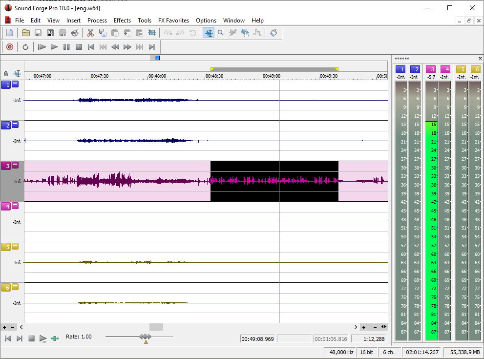
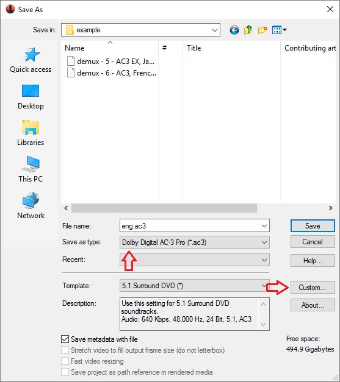
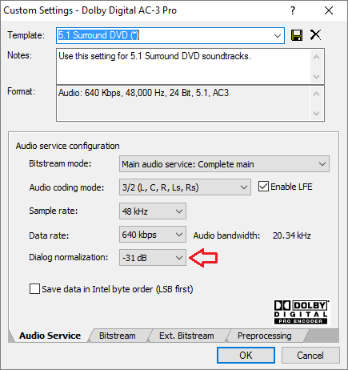
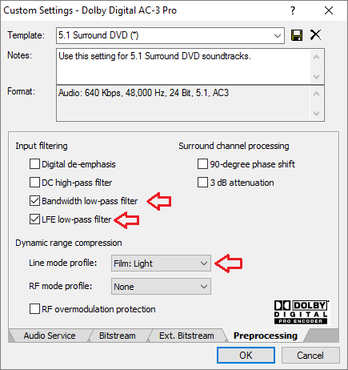
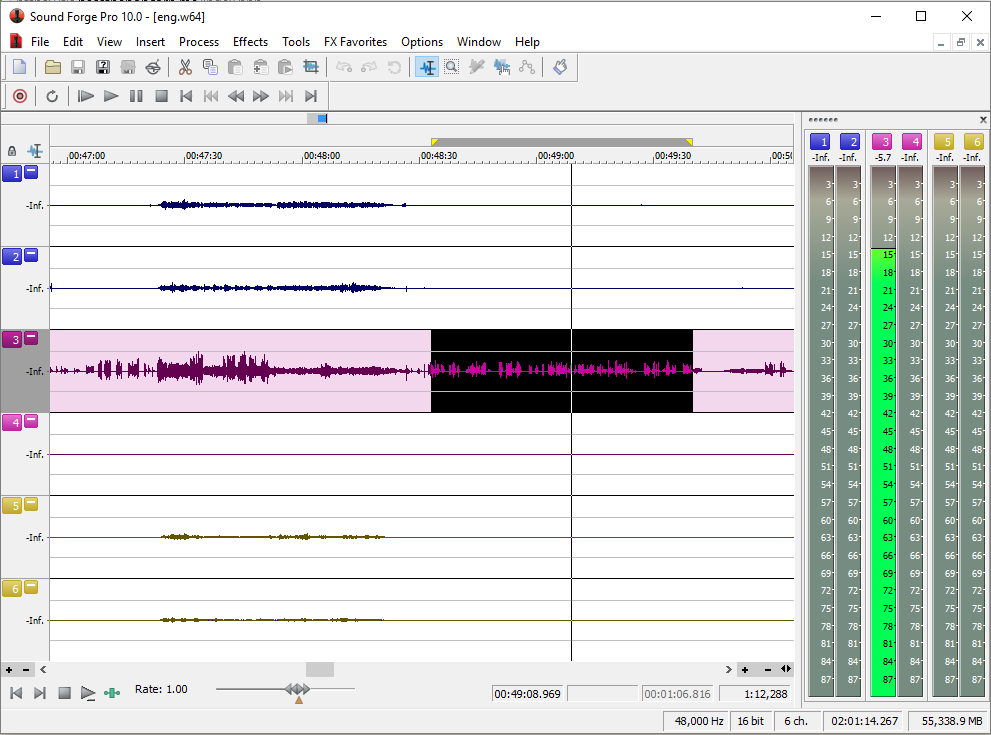
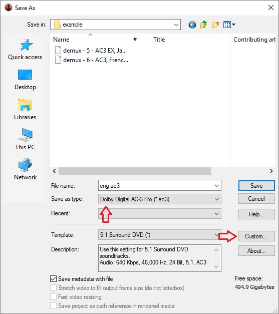
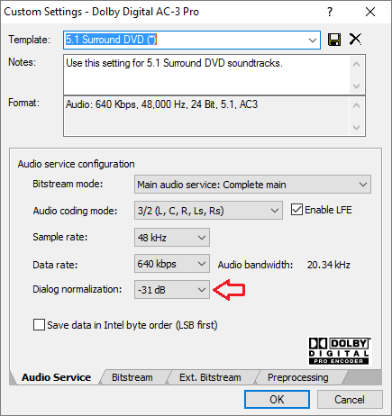
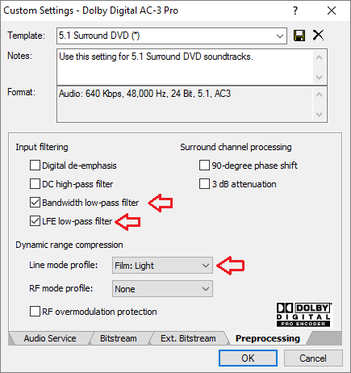

I have split this out of parent's Advanced x264 Encoding Guide to make it easier to reference and keep up to date
Introduction
AC3 also known as Dolby Digital is a widely supported multichannel audio codec. On PTP it is typically used for the main audio track of encodes with multi-channel audio.
While eac3to can transcode to AC3 using the aften library, there are concerns that its implementation may not produce the optimal quality of sound. For the best results it is recommended to use Sony Sound Forge which includes a reference AC3 encoder.
Installation
Use
1. Create a .w64 file from your lossless audio track:
2. Launch Sony Sound Forge and open the output.w64 file you just created.
It will take a few minutes for the audio to be processed. Once completed, go through the audio and highlight a region in the Center channel (usually the third stream in 5.1 sources) that has primarily dialogue (no music or sound effects).

Make sure to only select the center channel, otherwise all six channels will be averaged and you will get an inaccurate value. Then click Process->Normalize.

Click the Average RMS level (loudness) radio button and then press Scan Levels. After a few seconds, a value should show up for the RMS (undernearh the Scan Levels button). Write down/remember this value. Now click Cancel. Make sure to click Cancel and not OK, otherwise Sound Force will normalize the audio.
Now click File->Save As. Make sure "Dolby Digital AC-3 Pro" is selected and the "5.1 Surround DVD" profile is selected.

Now click the "Custom..." button.

On the first tab, make sure the settings match the image. Then set the Dialog normalization to the RMS value you wrote down earlier or -31 dB if it was lower. Select 640 kbps for a 1080p/720p encode or 448 kbps for an SD encode.
Now go to the Preprocessing tab.

Tick LFE low-pass filter, Bandwidth low-pass filter and uncheck all the other boxes. Make sure that RF overmodulation protection is unchecked. For the Line mode profile, the recommended value is "Film: Light".
Introduction
AC3 also known as Dolby Digital is a widely supported multichannel audio codec. On PTP it is typically used for the main audio track of encodes with multi-channel audio.
While eac3to can transcode to AC3 using the aften library, there are concerns that its implementation may not produce the optimal quality of sound. For the best results it is recommended to use Sony Sound Forge which includes a reference AC3 encoder.
Installation
- eac3to
- Sony Sound Forge (available on RED among other places). Note versions later than 11 reportedly have broken AC3 encoding.
Use
1. Create a .w64 file from your lossless audio track:
eac3to.exe e:\example\BDMV\PLAYLIST\01000.mpls
M2TS, 2 video tracks, 3 audio tracks, 5 subtitle tracks, 1:42:55, 62.856p
1: Chapters, 20 chapters
2: h264/AVC, 1080p24 /1.001 (16:9)
3: h264/AVC, 480p24 /1.001 (20:11)
4: DTS Master Audio, English, 5.1 channels, 16 bits, 48kHz, -11ms
(core: DTS, 5.1 channels, 1509kbps, 48kHz)
eac3to e:\example\BDMV\PLAYLIST\01000.mpls 4: e:\example\source\output.w64
2. Launch Sony Sound Forge and open the output.w64 file you just created.
It will take a few minutes for the audio to be processed. Once completed, go through the audio and highlight a region in the Center channel (usually the third stream in 5.1 sources) that has primarily dialogue (no music or sound effects).

Make sure to only select the center channel, otherwise all six channels will be averaged and you will get an inaccurate value. Then click Process->Normalize.
Click the Average RMS level (loudness) radio button and then press Scan Levels. After a few seconds, a value should show up for the RMS (undernearh the Scan Levels button). Write down/remember this value. Now click Cancel. Make sure to click Cancel and not OK, otherwise Sound Force will normalize the audio.
Now click File->Save As. Make sure "Dolby Digital AC-3 Pro" is selected and the "5.1 Surround DVD" profile is selected.

Now click the "Custom..." button.

On the first tab, make sure the settings match the image. Then set the Dialog normalization to the RMS value you wrote down earlier or -31 dB if it was lower. Select 640 kbps for a 1080p/720p encode or 448 kbps for an SD encode.
Now go to the Preprocessing tab.

Tick LFE low-pass filter, Bandwidth low-pass filter and uncheck all the other boxes. Make sure that RF overmodulation protection is unchecked. For the Line mode profile, the recommended value is "Film: Light".
Note: Line mode profile is a kind of Dynamic Range Control metadata. It doesn't modify the audio stream but embeds a flag in the audio stream suggesting which profile should be applied by the receiver. Users with headphones and 2.0 systems which cannot comfortably render the full dynamic range will benefit from it if they choose to enable it, while users with 5.1 systems can choose to disable it in their AV receivers for the full cinematic experience. Note that the original audio track (eg. TrueHD) normally also includes a DRC flag which is discarded on transcoding with eac3to.
Film Light Profile: Show
Max Boost: 6 dB (below –53 dB)
Boost Range: –53 to –41 dB (2:1 ratio)
Null Band Width: 20 dB (–41 to –21 dB)
Early Cut Range: –26 to –11 dB (2:1 ratio)
Cut Range: –11 to +4 dB (20:1 ratio)
www.dolby.com/us/en/technologies/a-guide-to-dolby-metadata.pdf